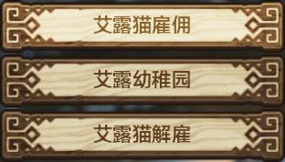
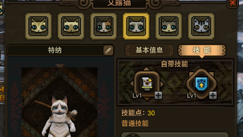
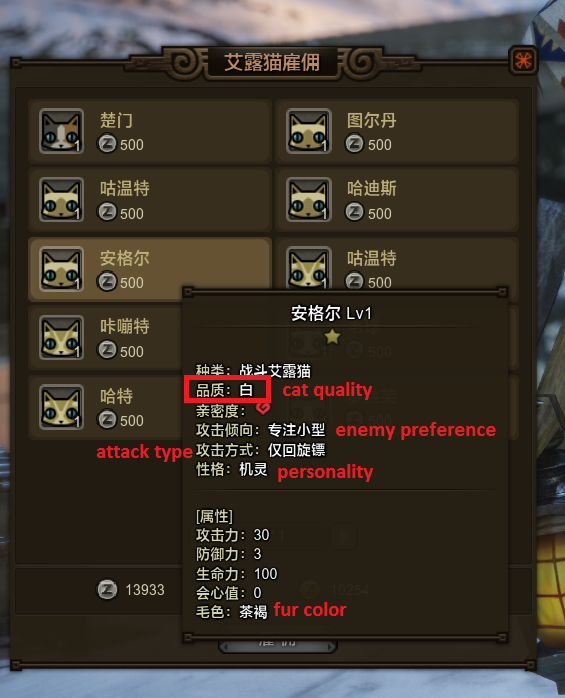
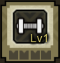
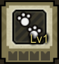
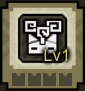
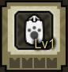
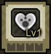

Cat Lady Menu
- Hire a cat (Options never change)
- Cat Kindergarten - Chance for better quality cats (Changes daily)
- Terminate a cat

Cat Quality:
- White (Normal)
- Green (Rare)
White cat's have 1 skill and green cat's have 2 skills

Enemy Preference:
- 专注大型 - Large Monsters only
- 专注小型 - Small Monsters only
- 大型优先 - Prioritize Large Monsters
- 小型优先 - Prioritize Small Monsters
- 平衡 - Balanced
Attack Types:
- 近战 - Melee
- 爆弹 - Bombs
- 回旋镖 - Boomerangs
- Can be a mix of the above.
Personality:
勇敢 - Brave - Aggressive cat but has 2 flaws: draws monsters attention too
quickly, bad for Great Sword/Hammer users. And secondly, because it
draws attention quick, it dies quickly.
- 机灵 - Smart - Less aggressive than Brave cats, and knows how to attack
monster weak spots. However, Smart cats have a fatal flaw of running
away whenever a monster rages.
- 和平主义 - Pacifist - They will not attack monsters at all. They should mainly be
used as a supportive role: To gather and to utilize support skills such
as flutes and traps. I would recommend getting a Green quality Pacifist
for gathering and support skills.
- 爱主人 - Loyal - Whenever the hunter gets attacked, Loyal cats will try to
attack and draw the attention of the monsters. They are not as
aggressive as Brave types, so tend to die less comparatively. A balanced
cat overall.
Fur Color:
- Purely for aesthetics and achievement completion.
Cat Training (In farm)

Weight Training: Increase defense

Roadwork: Increase vitality

Meditation Training: Increase time until fatigued

Sandbag Training: Increase attack

Intimacy Training: Increase intimacy